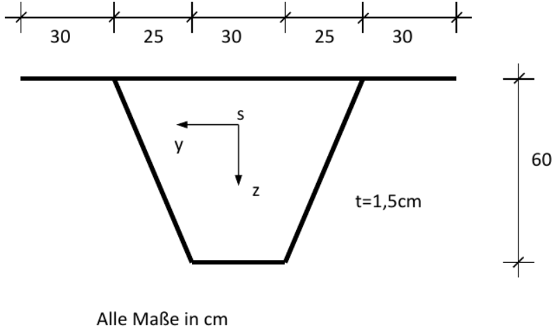
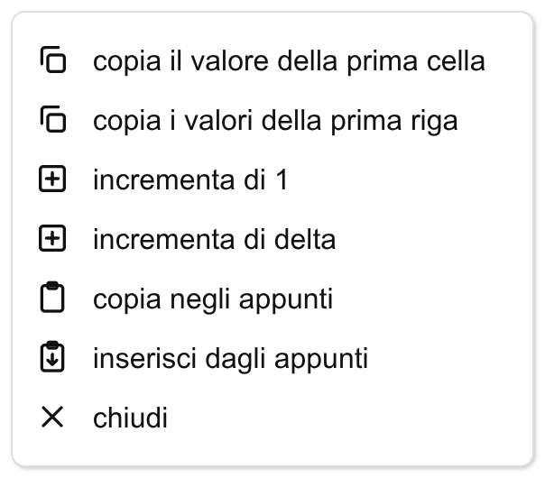
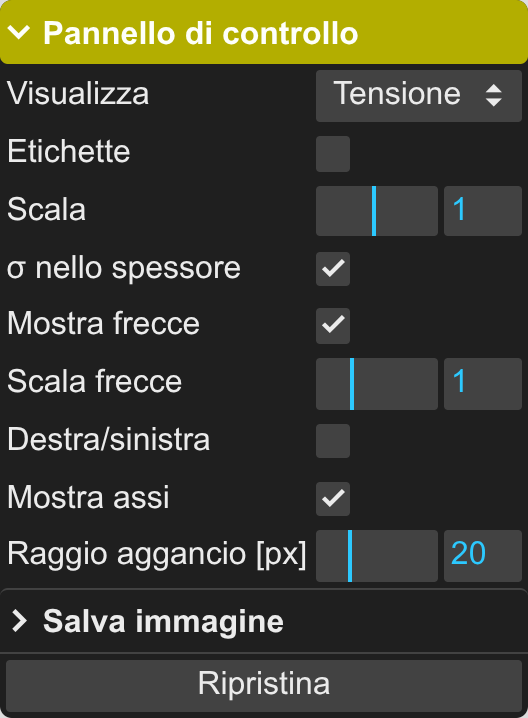

▶ Apri duennQs – calcolare caratteristiche e tensioni di sezioni in parete sottile
Panoramica
Sistema di coordinate e convenzione dei segni
Esempio
Indicazioni per l'uso dell'app
Tabelle e menu contestuale
File, PDF e salvataggio automatico
Input come testo e con l’IA
Rappresentazione 2D (scheda Sistema)
Rappresentazioni 3D
Simboli
Impostazioni
Installare l'app sul desktop
Compatibilità
Aiuto: la mia tastiera non ha il tasto meno, tastiera virtuale
Contatti e segnalazione di errori
Con questa applicazione web puoi calcolare le caratteristiche e le tensioni di sezioni in parete sottile. Si utilizza il modello della linea media (modello a filo), risolto con il metodo degli elementi finiti [1], [2]. Come per un telaio o una travatura reticolare, la sezione è descritta da elementi rettilinei collegati tra loro nei nodi. Ogni elemento deve essere collegato ad almeno un altro elemento: nella sezione non possono esserci elementi «isolati». Da ogni elemento deve esistere un percorso verso tutti gli altri.
Le coordinate dei nodi si inseriscono in un sistema ausiliario ȳ-z̄, la cui origine può essere scelta liberamente. Ogni elemento ha un nodo iniziale e un nodo finale e rappresenta esattamente andamenti quadratici della tensione tangenziale, per cui non è necessario infittire la discretizzazione. Se guardi lungo l'elemento dal suo inizio alla sua fine, il lato destro dell'elemento si trova alla tua destra.
Poiché gli elementi possono avere proprietà del materiale diverse, occorre indicare valori di riferimento per il modulo elastico e il coefficiente di Poisson. Le caratteristiche calcolate sono valori ideali riferiti a questi valori di riferimento. Se le utilizzi per un'asta in un programma di calcolo strutturale, inserisci lì gli stessi valori di riferimento come dati del materiale.
Le tensioni normali dovute a N, My e Mz sono calcolate con le formule usuali della meccanica, assumendo che le sezioni piane restino piane (Bernoulli), quelle dovute a Mω tramite l'ordinata di ingobbamento. Le tensioni tangenziali sono positive quando agiscono nella direzione del sistema di coordinate locale dell'elemento. La direzione locale positiva va dal nodo iniziale al nodo finale.
Caratteristiche del programma:
Convenzione dei segni delle sollecitazioni

Convenzione dei segni dell'elemento
Questo esempio è trattato in [2]. I dati della sezione vengono caricati automaticamente al primo avvio dell'app, con le sollecitazioni Vz = 500 kN e My = 600 kNm.

In [2] la sezione è studiata anche con le seguenti sollecitazioni:
Mxp = 250 kNm; Mxs = 150 kNm; Mω = 10 kNm²
Vy = 1000 kN; Vz = 500 kN
Materiale: E = 21.000 kN/cm²; ν = 0,3
L'app ha le schede Input, Risultati, Sistema, 3D, Info e ꔷꔷꔷ (impostazioni). Se passi con il mouse su un pulsante o lo tieni premuto con il dito, compare un breve testo di aiuto.
Come separatore decimale sono ammessi la virgola e il punto, il separatore delle migliaia non è ammesso.
Il testo del campo testo libero viene riportato nell'output PDF, per esempio per il testo dell'esercizio e il tuo nome. Sono possibili semplici formattazioni HTML come <b>grassetto</b>.
Se è spuntato tutti gli elementi hanno lo stesso materiale, i valori di riferimento valgono per tutti gli elementi e le colonne E e ν della tabella degli elementi vengono nascoste. Con fy,Rd le tensioni equivalenti superate vengono evidenziate in rosso nella scheda Risultati; in 3D fy,Rd può essere mostrato insieme alla tensione equivalente.
Calcola avvia il calcolo, dopodiché l'app passa alla scheda Risultati. Se il pulsante Calcola è evidenziato a colori, l'input è cambiato dall'ultimo calcolo.
Il numero di righe delle tabelle dei nodi e degli elementi si modifica con − e + accanto a Numero di nodi e Numero di elementi, oppure digitando il numero. Le righe vengono aggiunte o tolte alla fine della tabella.
Nella tabella degli elementi, + nella colonna No inserisce una riga sopra, il cestino elimina la riga. Entrambe le operazioni si possono annullare e ripetere. La tabella dei nodi volutamente non lo prevede: nod1 e nod2 degli elementi si riferiscono ai numeri dei nodi, che altrimenti si sposterebbero senza che te ne accorga. Così i numeri restano anche coerenti con il tuo schizzo su carta.
Per velocizzare l'input puoi copiare e generare valori nelle tabelle. Seleziona un blocco
trascinando sulle celle con il tasto destro del mouse premuto. Al rilascio compare il
menu contestuale.
Touchscreen: attiva prima Consenti la selezione delle celle con il dito nella
scheda ꔷꔷꔷ. Poi seleziona le celle passandoci sopra con il dito o la penna. Quando lo sollevi,
compare il menu contestuale.

Menu contestuale
Nota: a tablet e smartphone si possono collegare anche un mouse e/o una tastiera Bluetooth.
Con i pulsanti sopra l'input inizi un nuovo input, leggi un input salvato o salvi l'input attuale. I file di input hanno l'estensione .duennqs (su Android .duennqs.json); i vecchi file .txt si possono ancora leggere. Puoi anche trascinare un file con il mouse nella finestra dell'app. Se ci sono modifiche non ancora salvate, l'app chiede conferma prima di un nuovo input o dell'apertura di un altro file.
Nella scheda Risultati, il pulsante PDF salva i risultati in un file PDF, compresi l'input e il disegno della sezione.
L'input attuale viene salvato automaticamente nel browser, per esempio quando l'app passa in background o viene chiusa, e viene ripristinato all'avvio successivo. Questo non sostituisce il salvataggio in un file.
Quando è disponibile una nuova versione dell'app, ti viene chiesto se ricaricarla. L'input attuale viene mantenuto.
Con il pulsante Sezione come testo (terza icona sopra l’input) incolli nodi, elementi e altri dati come testo. Così un’IA come Claude o ChatGPT può leggere una sezione da un disegno, una foto o un file PDF e preparare l’input:
Da controllare: un’IA può leggere male le quote o confondere quote esterne e quote d’asse. Confronta la sezione nella scheda Sistema con il disegno e leggi le ipotesi nella risposta dell’IA.
Il formato di testo con un HEB 300 come esempio (modello a linea media, senza raccordi):
# HEB 300: h = 300, b = 300, tf = 19, tw = 11 (mm) → distanza tra le linee medie delle ali 281 unit mm y_right E 210000 nu 0.3 fyRd 235 My 120 text HEB 300 nodes 1 -150 0 2 0 0 3 150 0 4 -150 281 5 0 281 6 150 281 elements 1 1 2 19 2 2 3 19 3 2 5 11 4 4 5 19 5 5 6 19
Con input attuale come testo la finestra mostra l’input attuale in questo formato, ad es. come modello o per darlo a un’IA da modificare. Un file di testo in questo formato si può anche aprire come un file di input o trascinare nella finestra. Il salvataggio crea sempre un file .duennqs.
La scheda Sistema mostra la sezione nel piano ȳ-z̄ con baricentro, assi principali e centro di taglio. Il mirino mostra le coordinate e si aggancia ai nodi, al baricentro e al centro di taglio; nei nodi mostra anche l'ordinata di ingobbamento ω. Numeri mostra o nasconde i numeri di nodi ed elementi, SVG salva il disegno come file SVG.
La scheda 3D mostra i risultati nello spazio. I valori sono riportati nella direzione dell'asse dell'asta x. Con il mouse ruoti (tasto sinistro), sposti (tasto destro) e ingrandisci (rotellina) la vista; con due dita ruoti e ingrandisci. Con un dito interroghi i valori oppure sposti la vista; il pulsante in basso a sinistra passa da una modalità all'altra. Il mirino si aggancia ai punti della grandezza rappresentata e ne mostra il valore.
Le impostazioni si trovano nel Pannello di controllo, che mostra solo le opzioni adatte alla rappresentazione scelta.

Pannello di controllo
Incidenze nodali degli elementi:
nod1 = numero del nodo all'inizio dell'elemento
nod2 = numero del nodo alla fine dell'elemento
Ageom = area geometrica della sezione, senza tenere conto dei dati del materiale.
Assi: ȳ, z̄ = sistema di coordinate ausiliario dell’input; y, z = assi paralleli passanti
per il baricentro (a essi si riferiscono le sollecitazioni); 1, 2 = assi principali con
I11 e I22. Attenzione: in [2] gli assi principali si chiamano y e z.
r1, r2, rω = coefficienti di Wagner riferiti agli assi
principali, ad es. per lo svergolamento. r1 è associato a I22,
r2 a I11. In [2] il valore associato a Iy si chiama ry
e quello associato a Iz si chiama rz.
Tensioni tangenziali dovute alla torsione primaria Mxp:
τxs0,L = tensione tangenziale della parte a sezione aperta, lato sinistro, lineare
nello spessore dell'elemento
τxs0,R = tensione tangenziale della parte a sezione aperta, lato destro
τxs1 = tensione tangenziale della parte a sezione chiusa, costante nello spessore
dell'elemento
Tensioni tangenziali dovute al taglio e alla torsione secondaria Mxs:
τxsa = tensione tangenziale all'inizio dell'elemento a
τxsm = tensione tangenziale a metà dell'elemento m
τxse = tensione tangenziale alla fine dell'elemento e, tutte costanti nello
spessore dell'elemento
Tutti gli altri simboli in modo analogo.
Nella scheda ꔷꔷꔷ imposti la lingua (Language), l'unità di lunghezza, la dimensione del carattere, la selezione delle celle con il dito, i colori delle tabelle e il colore di accento. L'unità delle tensioni segue l'unità di lunghezza: mm → N/mm²; cm → kN/cm²; m → MN/m². I valori inseriti vengono convertiti; dopo occorre ricalcolare. Le dimensioni grandi del carattere sono pensate per la proiezione con un videoproiettore.
Puoi salvare le impostazioni come valori predefiniti nella memoria locale del browser; saranno
di nuovo disponibili dopo un riavvio. Il pulsante sottostante cancella di nuovo i valori
predefiniti.
La memoria locale (local storage) non è un cookie. Questa applicazione web esegue tutti i calcoli
localmente nel browser in JavaScript. Non vengono scambiati dati con alcun server web, quindi
dopo l'avvio dell'app non serve più una connessione di rete.
Questa applicazione è programmata come applicazione web (web app), quindi puoi installarla sul desktop con qualsiasi sistema operativo. Viene creata un'icona e l'app si comporta come un'app installata da uno store. duennQs continua a funzionare nel browser, ma senza elementi come la barra degli indirizzi. L'installazione varia secondo il sistema operativo, la versione e il browser.
Su Android, dopo aver aperto duennQs nel browser Chrome, scegli Installa app dal menu dell'applicazione (menu con tre puntini) in alto a destra e conferma la finestra di dialogo. Sul desktop compare quindi una nuova icona chiamata duennQs.
Su iOS usa il browser Safari. Qui il comando si chiama Aggiungi alla schermata Home (simbolo di condivisione, poi il simbolo con il più).
Su Microsoft Windows la procedura è simile a quella di Android. Nel browser Edge, il menu dell'applicazione (menu con tre puntini) contiene la seguente sezione:

Le versioni recenti di Chrome possono chiederti direttamente se vuoi installare l'app, vedi il simbolo a destra nella barra degli indirizzi:

Su macOS usa Microsoft Edge o Google Chrome per l'installazione.
Firefox al momento non supporta l'installazione. Su Windows e Linux puoi in alternativa passare alla modalità a schermo intero con il tasto F11.
Su Android, iOS e Linux l'app si disinstalla eliminando l'icona dal desktop. Su Windows si disinstalla come un normale programma.
Testato su Windows 10↑, macOS Catalina 10.15.7↑, Ubuntu 22.04↑, Android 9–16 e iOS 15.7.3↑, ogni volta con la versione attuale di Chrome, Chromium, Edge, Safari e Firefox. Vengono testate e supportate solo le versioni attuali dei browser.
Su alcuni dispositivi Android, soprattutto Samsung, la tastiera numerica non ha il tasto meno. Purtroppo la specifica HTML lascia questa scelta al produttore. In questo caso si consiglia una tastiera virtuale aggiuntiva, per esempio la tastiera Google Gboard dal Play Store. Dopo l'installazione devi ancora attivare la tastiera, meglio subito nel Play Store. In seguito puoi passare in qualsiasi momento da una tastiera installata all'altra (simbolo in basso a destra sulla tastiera).
Per suggerimenti, richieste e segnalazioni di errori usa l'indirizzo e-mail statikverstehen@web.de (in tedesco o in inglese). Nella segnalazione di un errore è spesso utile allegare una copia del file di input.
[1] Matthias Kraus: Computerorientierte Berechnungsmethoden für beliebige Stabquerschnitte des Stahlbaus, tesi di dottorato, Bochum 2005
[2] Matthias Kraus; Rolf Kindmann:
Finite-Elemente-Methoden im Stahlbau, 2ª edizione, Ernst W. & Sohn Verlag, 2019
Edizione inglese: Rolf Kindmann; Matthias Kraus:
Steel Structures: Design using FEM, Ernst W. & Sohn Verlag, 2011